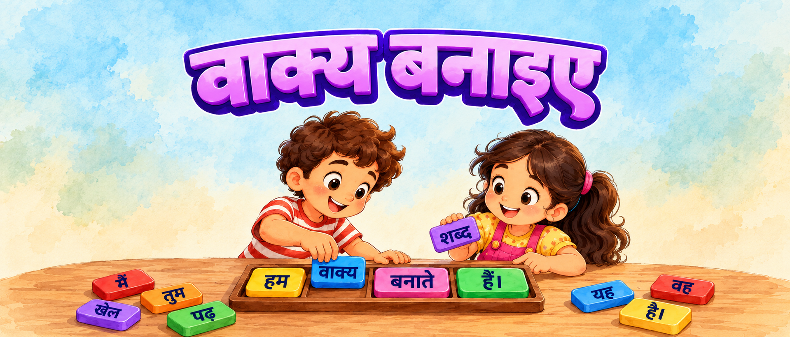

आपके references जैसी watercolor खाली जगह और स्पष्ट foreground। Title + छह पड़ाव।

हल्का watercolor background, बड़ा title और शब्द जोड़ते बच्चे।
सही शब्द वाला तख्ता खाली जगह लगे; Swifty पुल पार करे।
सही शब्द वाली चाबी चुनो; दरवाज़ा खुले।
सही शब्द वाले संकेत का रास्ता चुनो; Swifty आगे चले।
सही शब्द वाला gear खाली धुरी पर लगाओ; gears घूमकर बंद tunnel का gate खोलें।
चार steps सच में गायब हैं; सही शब्द वाला tread लगाने पर रास्ता बने।
वाक्य पूरा करो; गेट खुले और दोस्त स्वागत करे।
ये visual concepts हैं; अभी playable game या अलग-अलग transparent sprite assets नहीं हैं। मौजूदा game में इस adventure के बदलाव नहीं लगाए गए हैं।